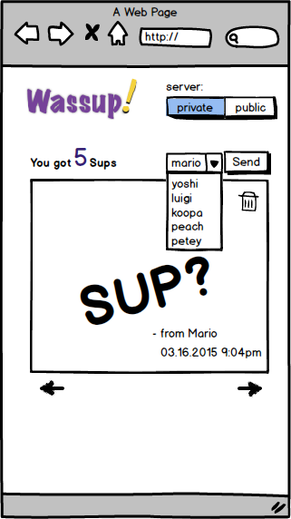

The goals of this assignment are to give you an opportunity to implement a front-end web application that communicates with a web framework (using classic web requests and AJAX calls) that can store and retrieve data to/from a database.
In this assignment, you will create a web application called Wassup, which allows users to send a "sup?" message to their friends. "sup?" is short-hand for "what's up?", which is an common alternative way to say "hello!"
Specifically, users should be able to
We assume the user ID is set in a cookie. If it is not set, users will be redirected to a login page (views/wassup_login.html). The login functionality is provided and is fully functional. However, you should provide additional styling of the login page such that it is consistent with the look of your application. The logout function is provided in the server. You need to implement a logout link/button in the user interace, which will issue a form POST to the server to handle logout.
The contact list should display a list of friends a user has. The user should be able to add a new friend (using a unique alias) or remove a friend from the contact list.
The "sup?" message should be drawn on the HTML canvas by randomly manipulating the graphic context before calling fillText() on the HTML canvas. That is, each time the user receives a "sup?" message from a friend, that message should have a different look, color and size from the previous message.
The system should periodically poll the server to check if there are "sup?" messages. The "sup?" messages should be displayed one at a time, with the most recent message displayed first. Each "Sup?" message should be accompanied by information about who sent it and at what time. Users should be able to click on a "next" and "previous" button to see the next or previous "sup?" message.
The frontend implementation will involve modifications to the following files:
Your frontend designs need to be responsive and display well both on the desktop and mobile devices. When the width is <= 450, the application should switch to mobile mode. In the mobile mode, the layout should change to fit the smaller screen size, which may require resizing some of the user interface components and disabling some of the functionalities. Below is a screenshot of an example of a mobile version of the "Wassup!" application.
The backend server (wassup.py) is written using a web framework called Python-Bottle (http://bottlepy.org/docs/dev/index.html). You should use the provided backend system as is, without having to make any modifications.
To run the backend server privately on your local machine, type "python wassup.py" in the terminal, then go to "http://localhost:8080" using a web browser. You can run print_db.py to print out the content of the database. This is maybe useful for debugging purposes. Alternatively, your application can communicate with the public server directly at http://104.197.3.113.
Each "sup?" message has a unique sup_id. This ID is used to uniquely identify each "sup?" message so that users can clear a particular "sup?" message from their deck.
Your application can call the backend with the following commands and associated data:
In response to the request, the server will return a JSON object with the following key-value pairs (all fields will be present in every response):
No unit testing is required for this assignment.
You must complete the assignment within the following constraints:
'use strict';.
To receive a great mark, you must implement the system as described above, under the given constraints, with all unit tests passing, while having an aesthetically pleasing design and a great user experience.
As a rough guide, about 25% of your mark will be allocated to the visual design and user experience, with the rest allocated to implementation concerns.
TAs will mark your assignment using the latest version of Chrome on whatever platform they use on a daily basis. In theory, the specific platform shouldn't matter. If we find platform differences, we'll handle them as they arise. They will mark the assignment in "offline" mode (i.e., with no access to the Internet).